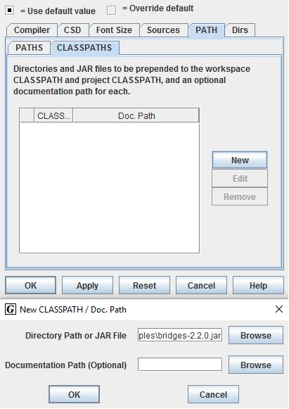
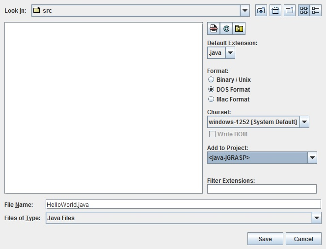
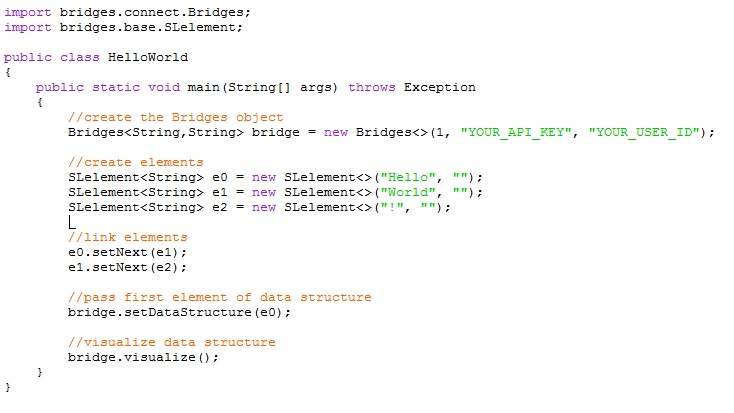
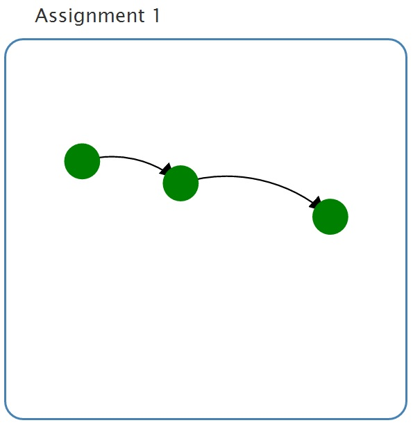

Step 1: Install jGRASP
- If you do not have jGRASP installed, download it from the jGRASP site and install it on your computer.
- jGRASP requres Java 1.6 or higher to be installed, else you will get the error "Unable to locate a java executable. Java 6 or higher must be installed to run jGRASP."
|
Step 2: Create Bridges Account
-
Visit the Bridges main page and create yourself an account by clicking the login button on the top navigation bar. After creating your account, click on your profile name in the upper right corner to
view your profile. Once in your profile, you will see your API Key; you will need this API key in part 2 of the tutorial(as well as in every BRIDGES program you write).
NOTE: Make sure to remember your password. There is no password recovery option, and you can only have one account per email address.
|
Step 3: Create a Java Project
- Open Project-->New
- Follow the Project menu directions and create a Java Project at a convenient location. This will create a new folder on your drive.
|
Step 4: Import Jar File into project
- Download the Bridges.jar file from this link and save it somewhere convenient on your drive.
- In jGRASP, Open Settings-->PATH/CLASSPATH-->Project and select the CLASSPATH tab.
- Click the New button, and enter the path to the Bridges JAR file.
|  |
Step 5: Create a Bridges Program
-
We will illustrate a Singly Linked List Bridges program here - for more details of this program, refer to the User Guide Tutorials
that provides fully documented Bridges examples for each data structure.
- Open File-->New-->Java, give your file a name, add it to the project you created in step 3 and press save.
|
 |
Step 6: Compile and Execute Bridges Program
- To compile a class, click on the green plus Compile button at the top of the window.
- To execute the program, click on the red running man Run button next to the compile button.
- On the console window, the user will be pointed to a web link for viewing the visualization of the singly linked list.
|

Check out your visuals at http://bridges-cs.herokuapp.com/assignments/1/YOUR_USER_ID?apikey=YOUR_API_KEY
|
Step 7: Visualization
- If your program compiles and executes without errors the weblink points to a visualization of your data structure.
- Paste this link in your browser and see the result.
- Your visualization should look something like this.
- You can do limited interactive operations on the display window - move the nodes, mouse over to see labels, move the entire visualization, etc.
|
 |